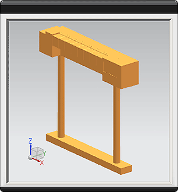
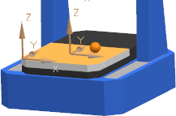
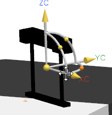

Add the tool rack to your CMM machine copy
In this activity, you will modify your machine copy by adding a tool rack as a component.
-
In NX, open the machine assembly file
[install directory]\Siemens\NX x.x\CMM_INSPECTION\resource\library\machine\installed_machines\sheffield_rl_50_tr\graphics\sheffield_rl_50.prt
-
Choose File→Save As, and in the Save As dialog box, in the sheffield_rl_50_tr\graphics folder, save the file as sheffield_rl_50_tr.prt.
-
Click the Machine Tool Navigator tab
 .
.
Note
If the tab is not visible, choose Start→All Applications→Machine Tool Builder.
-
Choose Start and ensure that Assemblies is selected.
-
On the Assemblies toolbar, click Add Component
 .
.
-
In the Add Component dialog box, in the Part section, click Open
 .
.
-
In the Part Name dialog box, select the tool rack file and click OK.
[install directory]\Siemens\NX x.x\CMM_INSPECTION\resource\library\racks\ACR1_308_mm.prt
The selected part file appears in the Component Preview window.

-
In the Placement section, from the Positioning list, select Move.
-
Ensure that Count is set to 1, Multiple Add is set to None, and Reference Set is set to Model (“MODEL”).
-
Click OK.
-
In the Point dialog box, from the Type list, select Point on Face, and select the point on the machine table where you want the tool rack to lie.

-
Click OK, and in the Move Component dialog box, in the Transform section, from the Motion list, select Dynamic.
-
In the graphics window, use the translation and rotation tools to move the tool rack to your preferred position, and then click OK.

-
Choose File→Save.
The rack is now added to your CMM part model, and is ready to be integrated with the CMM machine.